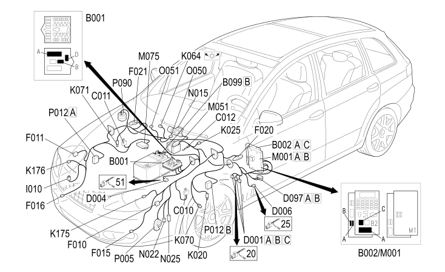

12 FRONT
- Path
- Electrical equipment > 2 WIRING > 12 FRONT
- Kind
- wiring harness
- Applies to
- all engines; all production periods
- Interactive page
- https://sloeber94.github.io/elrnDB-fCrm/en/#/194000023
Applies to: all engines; all production periods

Topics that link to this page (57)
- B001A ENGINE COMPARTMENT JUNCTION UNIT (FRONT)
- B001A ENGINE COMPARTMENT JUNCTION UNIT (FRONT)
- B001B ENGINE COMPARTMENT JUNCTION UNIT (FRONT)
- B001D ENGINE COMPARTMENT JUNCTION UNIT (FRONT)
- B002A JUNCTION UNIT UNDER DASHBOARD (FRONT)
- B002A JUNCTION UNIT UNDER DASHBOARD (FRONT)
- B002C JUNCTION UNIT UNDER DASHBOARD (FRONT)
- B099B MAXI FUSE BOX ON BATTERY (FRONT)
- C010 LEFT FRONT EARTH (FRONT)
- C010 LEFT FRONT EARTH (FRONT)
- C011 RIGHT FRONT EARTH (FRONT)
- C011 RIGHT FRONT EARTH (FRONT)
- C012 ABS FRONT EARTH (FRONT)
- D001A FRONT/DASHBOARD COUPLING (FRONT)
- D001A FRONT/DASHBOARD COUPLING (FRONT)
- D001B FRONT/DASHBOARD COUPLING (FRONT)
- D001C FRONT/DASHBOARD COUPLING (FRONT)
- D004 FRONT/ENGINE COUPLING (FRONT)
- D004 FRONT/ENGINE COUPLING (FRONT)
- D006 FRONT/REAR COUPLING (FRONT)
- D006 FRONT/REAR COUPLING (FRONT)
- D097A SHORT CIRCUIT COUPLING (FRONT)
- D097B SHORT CIRCUIT COUPLING (FRONT)
- F010 LEFT HEADLAMP (FRONT)
- F010 LEFT HEADLAMP (FRONT)
- F011 RIGHT HEADLAMP (FRONT)
- F011 RIGHT HEADLAMP (FRONT)
- F015 LEFT FOG LIGHT (FRONT)
- F016 RIGHT FOG LIGHT (FRONT)
- F020 LEFT SIDE DIRECTION INDICATOR (FRONT)
- F021 RIGHT SIDE DIRECTION INDICATOR (FRONT)
- I010 BONNET RELEASE SWITCH (FRONT)
- K001 HEADLAMP ALIGNMENT CORRECTOR FRONT POTENTIOMETER (CAF) (FRONT)
- K020 LEFT BRAKE PAD WEAR SENSOR (SWITCH) (FRONT)
- K025 BRAKE FLUID LEVEL SENSOR (SWITCH) (FRONT)
- K064 EXHAUST GAS PRESENCE SENSOR (FRONT)
- K070 LEFT FRONT WHEEL SENSOR FOR ABS (FRONT)
- K071 RIGHT FRONT WHEEL SENSOR FOR ABS (FRONT)
- K175 DRIVER'S SIDE FRONT AIR BAG SENSOR (FRONT)
- K176 PASSENGER SIDE FRONT AIR BAG SENSOR (FRONT)
- M001A BODY COMPUTER (FRONT)
- M001B BODY COMPUTER (FRONT)
- M001B BODY COMPUTER (FRONT)
- M051 BRAKING SYSTEM CONTROL UNIT (NFR) (FRONT)
- M051 BRAKING SYSTEM CONTROL UNIT (NFR) (FRONT)
- M051 BRAKING SYSTEM CONTROL UNIT (NFR) (FRONT)
- M073 HEADLAMP ALIGNMENT CONTROL UNIT (CAF) (FRONT)
- M075 ADDITIONAL HEATER CONTROL UNIT (FRONT)
- N015 WINDSCREEN WIPER MOTOR (FRONT)
- N022 WINDSCREEN/REARSCREEN ELECTRIC WASHER PUMP MOTOR (FRONT)
- N025 HEADLAMP WASHER PUMP MOTOR (FRONT)
- O050 LEFT WINDSCREEN WASHER (NOZZLE) DEFROZING RESISTANCE (FRONT)
- O051 RIGHT WINDSCREEN WASHER (NOZZLE) DEFROZING RESISTANCE (FRONT)
- P005 SINGLE TONE HORN (FRONT)
- P012A TYRE PRESSURE CONTROL UNIT ANTENNA (FRONT)
- P012B TYRE PRESSURE CONTROL UNIT ANTENNA (FRONT)
- P090 ALARM SIREN (FRONT)